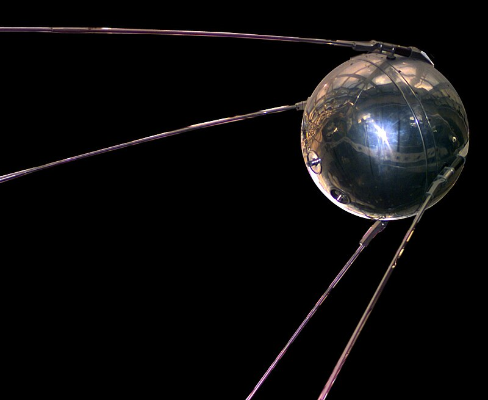

Początki wyścigu kosmicznego
 Pierwszy sztuczny satelita Sputnik 1 został wystrzelony przez ZSRR 4 października 1957 roku. Jego prosty przekaz radiowy, nadawany z orbity, był symbolem radzieckiego sukcesu technologicznego i stał się początkiem wyścigu kosmicznego między ZSRR a USA.
Wkrótce po sukcesie Sputnika 1 3 listopada 1957 roku Związek Radziecki wystrzelił kolejną sondę, Sputnik 2, który przewoził pierwsze zwierzę wystrzelone w kosmos- bezpańskiego psa o imieniu Łajka. Celem misji było nie tylko badanie środowiska kosmicznego, ale także zbadanie wpływu przebywania w kosmosie na organizmy żywe. Chociaż Łajka nie przeżyła podróży, misja dostarczyła cennych danych na temat warunków panujących na orbicie oraz wpłynęła na przyszłe przygotowania do załogowych misji kosmicznych.
 Po sukcesach ZSRR, Stany Zjednoczone również zaczęły dynamicznie rozwijać swój program kosmiczny.
Pierwszym amerykańskim sztucznym satelitą, który wszedł na orbitę, był Explorer 1, wystrzelony 31
stycznia 1958 roku. Jego głównym celem było badanie promieniowania kosmicznego, co doprowadziło do
odkrycia pasów Van Allena – stref intensywnego promieniowania wokół Ziemi. Explorer 1 stanowił
znaczący sukces dla USA w wyścigu kosmicznym i zainspirował dalsze misje bezzałogowe, które
dostarczały istotnych informacji na temat naszego otoczenia kosmicznego, umożliwiając rozwój
zaawansowanych technologii potrzebnych do eksploracji kosmosu.
Po sukcesach ZSRR, Stany Zjednoczone również zaczęły dynamicznie rozwijać swój program kosmiczny.
Pierwszym amerykańskim sztucznym satelitą, który wszedł na orbitę, był Explorer 1, wystrzelony 31
stycznia 1958 roku. Jego głównym celem było badanie promieniowania kosmicznego, co doprowadziło do
odkrycia pasów Van Allena – stref intensywnego promieniowania wokół Ziemi. Explorer 1 stanowił
znaczący sukces dla USA w wyścigu kosmicznym i zainspirował dalsze misje bezzałogowe, które
dostarczały istotnych informacji na temat naszego otoczenia kosmicznego, umożliwiając rozwój
zaawansowanych technologii potrzebnych do eksploracji kosmosu.